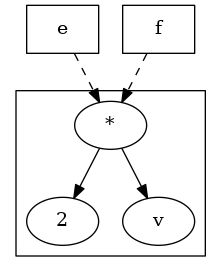
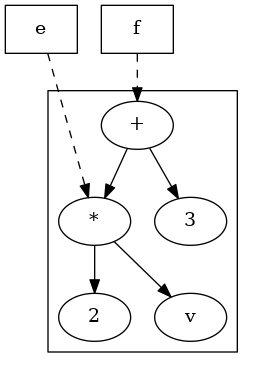

Design Overview¶
Historical Comparison¶
This document describes the “Pyomo5” expressions, which were introduced in Pyomo 5.6. The main differences between “Pyomo5” expressions and the previous expression system, called “Coopr3”, are:
Pyomo5 supports both CPython and PyPy implementations of Python, while Coopr3 only supports CPython.
The key difference in these implementations is that Coopr3 relies on CPython reference counting, which is not part of the Python language standard. Hence, this implementation is not guaranteed to run on other implementations of Python.
Pyomo5 does not rely on reference counting, and it has been tested with PyPy. In the future, this should allow Pyomo to support other Python implementations (e.g. Jython).
Pyomo5 expression objects are immutable, while Coopr3 expression objects are mutable.
This difference relates to how expression objects are managed in Pyomo. Once created, Pyomo5 expression objects cannot be changed. Further, the user is guaranteed that no “side effects” occur when expressions change at a later point in time. By contrast, Coopr3 allows expressions to change in-place, and thus “side effects” make occur when expressions are changed at a later point in time. (See discussion of entanglement below.)
Pyomo5 provides more consistent runtime performance than Coopr3.
While this documentation does not provide a detailed comparison of runtime performance between Coopr3 and Pyomo5, the following performance considerations also motivated the creation of Pyomo5:
There were surprising performance inconsistencies in Coopr3. For example, the following two loops had dramatically different runtime:
M = ConcreteModel() M.x = Var(range(100)) # This loop is fast. e = 0 for i in range(100): e = e + M.x[i] # This loop is slow. e = 0 for i in range(100): e = M.x[i] + e
Coopr3 eliminates side effects by automatically cloning sub-expressions. Unfortunately, this can easily lead to unexpected cloning in models, which can dramatically slow down Pyomo model generation. For example:
M = ConcreteModel() M.p = Param(initialize=3) M.q = 1 / M.p M.x = Var(range(100)) # The value M.q is cloned every time it is used. e = 0 for i in range(100): e = e + M.x[i] * M.q
Coopr3 leverages recursion in many operations, including expression cloning. Even simple non-linear expressions can result in deep expression trees where these recursive operations fail because Python runs out of stack space.
The immutable representation used in Pyomo5 requires more memory allocations than Coopr3 in simple loops. Hence, a pure-Python execution of Pyomo5 can be 10% slower than Coopr3 for model construction. But when Cython is used to optimize the execution of Pyomo5 expression generation, the runtimes for Pyomo5 and Coopr3 are about the same. (In principle, Cython would improve the runtime of Coopr3 as well, but the limitations noted above motivated a new expression system in any case.)
Expression Entanglement and Mutability¶
Pyomo fundamentally relies on the use of magic methods in Python to generate expression trees, which means that Pyomo has very limited control for how expressions are managed in Python. For example:
Python variables can point to the same expression tree
M = ConcreteModel() M.v = Var() e = f = 2 * M.v
This is illustrated as follows:
A variable can point to a sub-tree that another variable points to
M = ConcreteModel() M.v = Var() e = 2 * M.v f = e + 3
This is illustrated as follows:
Two expression trees can point to the same sub-tree
M = ConcreteModel() M.v = Var() e = 2 * M.v f = e + 3 g = e + 4
This is illustrated as follows:
![digraph foo {
{
e [shape=box]
f [shape=box]
g [shape=box]
}
x [label="+"];
"*" -> 2;
"*" -> v;
"+" -> "*";
"+" -> 3;
x -> 4;
x -> "*";
subgraph cluster { x; 4; "+"; 3; "*"; 2; v; }
e -> "*" [splines=curved, style=dashed, constraint=false];
f -> "+" [splines=curved, style=dashed];
g -> x [splines=curved, style=dashed];
}](../../_images/graphviz-faa245d66ae9407c2ad6c000b48c5cd725b3413f.png)
In each of these examples, it is almost impossible for a Pyomo user or developer to detect whether expressions are being shared. In CPython, the reference counting logic can support this to a limited degree. But no equivalent mechanisms are available in PyPy and other Python implementations.
Entangled Sub-Expressions¶
We say that expressions are entangled if they share one or more
sub-expressions. The first example above does not represent
entanglement, but rather the fact that multiple Python variables
can point to the same expression tree. In the second and third
examples, the expressions are entangled because the subtree represented
by e is shared. However, if a leave node like M.v is shared
between expressions, we do not consider those expressions entangled.
Expression entanglement is problematic because shared expressions complicate the expected behavior when sub-expressions are changed. Consider the following example:
M = ConcreteModel()
M.v = Var()
M.w = Var()
e = 2 * M.v
f = e + 3
e += M.w
What is the value of e after M.w is added to it? What is the
value of f? The answers to these questions are not immediately
obvious, and the fact that Coopr3 uses mutable expression objects
makes them even less clear. However, Pyomo5 and Coopr3 enforce
the following semantics:
A change to an expression e that is a sub-expression of f does not change the expression tree for f.
This property ensures a change to an expression does not create side effects that change the values of other, previously defined expressions.
For instance, the previous example results in the following (in Pyomo5):
With Pyomo5 expressions, each sub-expression is immutable. Thus,
the summation operation generates a new expression e without
changing existing expression objects referenced in the expression
tree for f. By contrast, Coopr3 imposes the same property by
cloning the expression e before added M.w, resulting in the following:
![digraph foo {
{
e [shape=box]
f [shape=box]
}
"*" -> 2;
"*" -> v;
"+" -> "*";
"+" -> 3;
etimes [label="*"];
etwo [label=2];
etimes -> etwo;
etimes -> v;
x [label="+"];
x -> w;
x -> etimes;
subgraph cluster { "+"; 3; "*"; 2; v; x; w; etimes; etwo;}
f -> "+" [splines=curved, style=dashed];
e -> x [splines=curved, style=dashed];
}](../../_images/graphviz-211710552723e946f31e15c116f633408aa79c1b.png)
This example also illustrates that leaves may be shared between expressions.
Mutable Expression Components¶
There is one important exception to the entanglement property
described above. The Expression component is treated as a
mutable expression when shared between expressions. For example:
M = ConcreteModel()
M.v = Var()
M.w = Var()
M.e = Expression(expr=2 * M.v)
f = M.e + 3
M.e += M.w
Here, the expression M.e is a so-called named expression that
the user has declared. Named expressions are explicitly intended
for re-use within models, and they provide a convenient mechanism
for changing sub-expressions in complex applications. In this example, the
expression tree is as follows before M.w is added:
And the expression tree is as follows after M.w is added.
When considering named expressions, Pyomo5 and Coopr3 enforce the following semantics:
A change to a named expression e that is a sub-expression of f changes the expression tree for f, because f continues to point to e after it is changed.